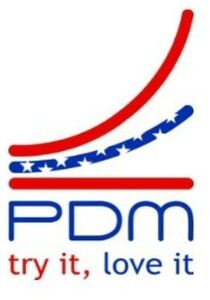

Trade Mark Journal No.2025/037 12 September 2025
WO0000001871667 (6)
Office of origin: Italy

The mixed figurative mark consists of graphic and textual elements in red and blue. The graphic part features two curved lines and one straight line. The upper curved line is red, while the central curved line is blue and decorated with a series of white stars. The lower line is straight and red. This combination of lines creates a dynamic and stylized visual effect, evoking a sense of growth or upward movement. Below the lines appears the word "PDM" in blue, rendered in a modern and geometric font. Beneath this, the motto "try it, love it" is shown in smaller characters. The phrase "try it" is in red, while "love it" is in blue, creating a harmonious contrast that echoes the colors of the main logo.
The mark contains the colours red and blue.
- Class 6
- Copper, unwrought or semi-wrought; copper rings; drain pipes of metal; pipes and tubes of metal; buildings, transportable, of metal; pipe muffs of metal; common metals, unwrought or semi-wrought; linings of metal for building; junctions of metal for pipes; pipework of metal; building materials of metal; cables of metal, non-electric; binding screws of metal for cables; buildings of metal; copper wire, not insulated; gutter pipes of metal; reels of metal, non-mechanical, for flexible hoses; reels of metal, non-mechanical, for flexible hoses; branching pipes of metal; ducts of metal for ventilating and air-conditioning installations; cladding of metal for building; building materials of metal with soundproofing qualities.
PDM EU s.r.l.
Representative: Di Fonte Daniele, Via Emanuele Mola 34, I-70126 Bari (BA), ITALY